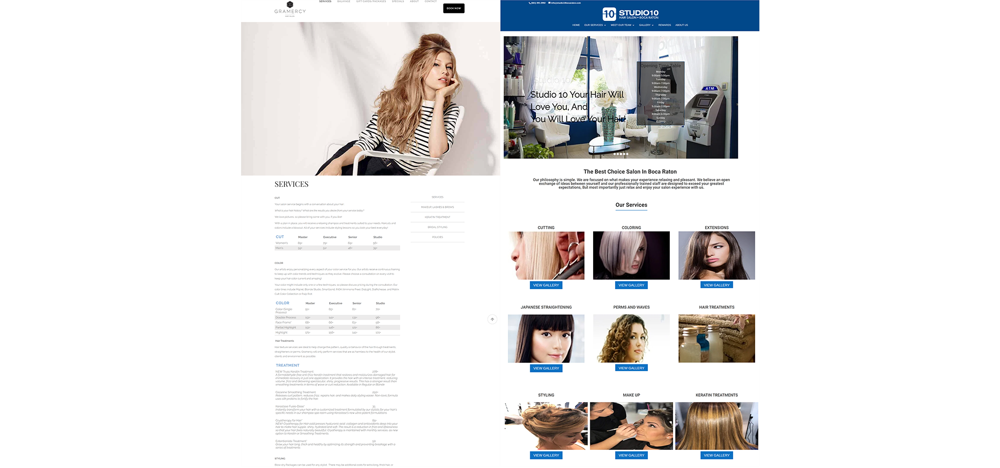
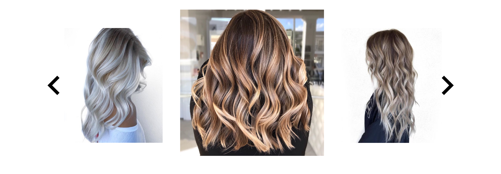

Overview
The website is still in the development phase as I am still currently working with the client to create content. The client wanted a website for her business and well as a portfolio. I decided to incorporate elements of rustic and modern design. These elements will define my client’s journey as she breaks away to become a small business owner.
Competitor Analysis
Promotional websites for salons in Boca Raton, FL has a market gap for simple and easy to use design. Many websites, like the example below, are congested with information that can distract viewers and take away from the focus.
The Design
White space
To keep a minimalism style, white space was used to improve user experience. The white space helps move visitors through the site, flowing from one element to the next without distraction.
Grid design
The grid system allows for a successful responsive web design so that the site is consistent across browsers.
Moving Forward
Manual Slideshow
Display a collection of high-quality images taken by the staff. These images will provide an insight into the stylists’ work quality and style
 Return Home